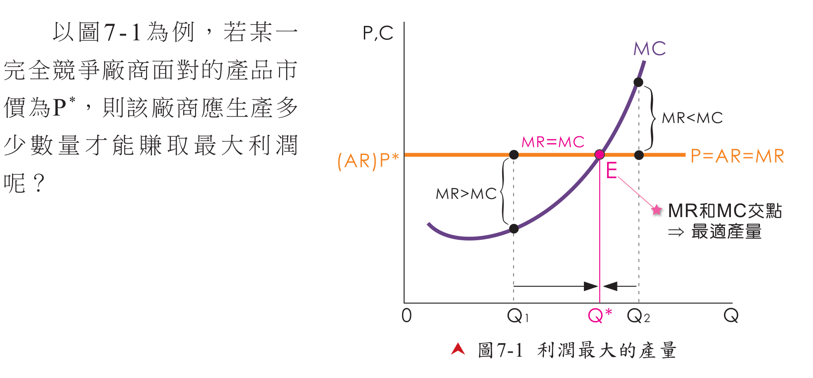
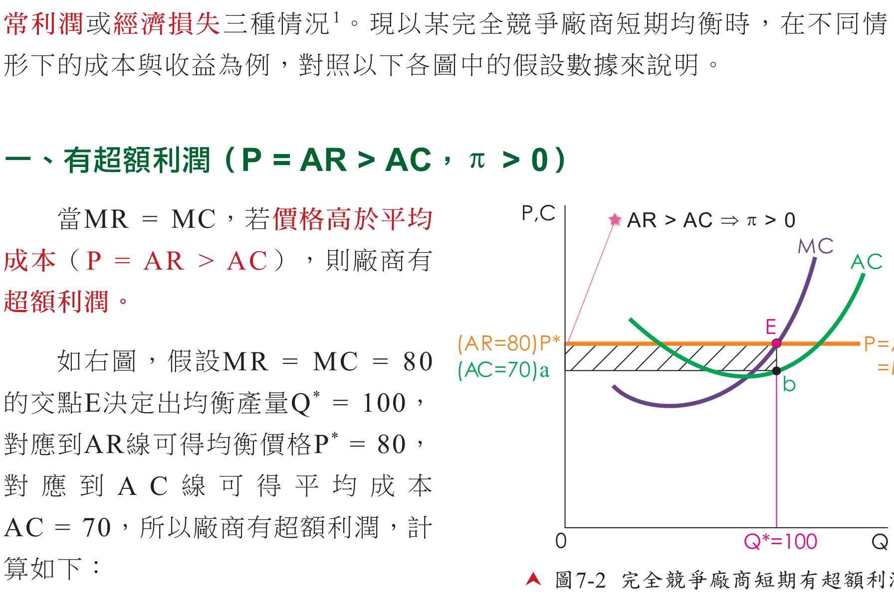
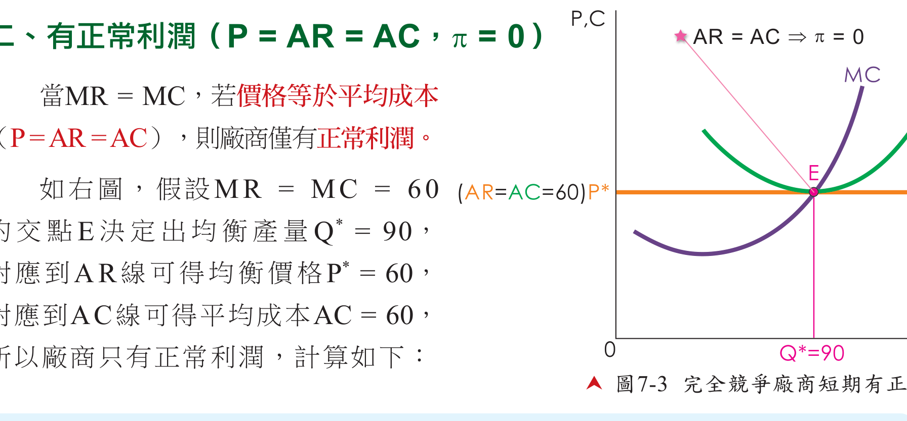
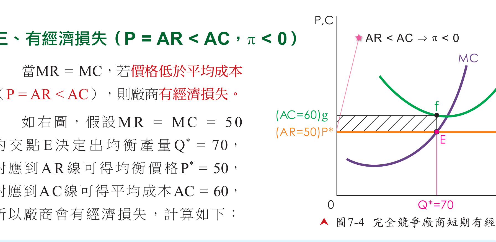
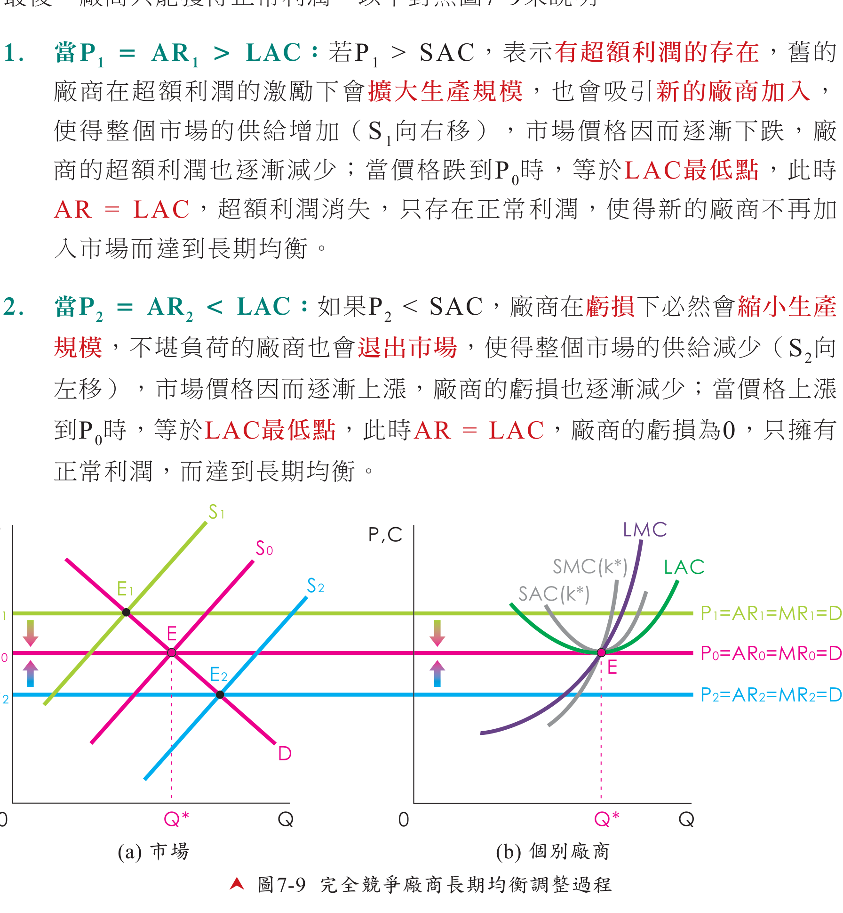

⚖️ 重點一：廠商短期均衡條件與邊際分析法
課本 7-1-1 節 ｜ 利潤極大化黃金法則1. 最適產量決策 —— 邊際分析法（Marginal Analysis）：
- 若 MR ＞ MC：每多賣一單位所增加的收益大於增加的成本，增產有利可圖 ➔ 廠商應擴大生產（增加 Q）！
- 若 MR ＜ MC：每多賣一單位所增加的成本超過增加的收益，增產造成損失 ➔ 廠商應縮減生產（減少 Q）！
- 若 MR ＝ MC：多生產既不增加利益也不增加損失，廠商利潤達到最大（或虧損最小）！
🌟 完全競爭廠商短期均衡條件：
因完全競爭個別廠商為價格接受者（P ＝ MR），故利潤極大均衡條件為：
因完全競爭個別廠商為價格接受者（P ＝ MR），故利潤極大均衡條件為：
P ＝ MR ＝ MC ； 且 MC 線處於上升階段！

▲ 教科書 P.199 圖 7-1：邊際分析法決定最適產量 Q*（P = MR = MC）
📊 重點二：短期均衡的三種損益情形（超額利潤、正常利潤、經濟損失）
課本 7-1-2 節 ｜ 比較 P 與 AC
🔍 賺錢或虧錢的判定鐵則：比較「價格 P」與「平均成本 AC」！
每單位利潤 ＝ P － AC ； 總經濟利潤 π ＝ (P － AC) × Q*
每單位利潤 ＝ P － AC ； 總經濟利潤 π ＝ (P － AC) × Q*

▲ 圖 7-2：超額利潤（P ＝ AR ＞ AC，π ＞ 0）
情境一：享有超額利潤（P ＞ AC，π ＞ 0）
- 條件： 市場價格 P 高於均衡產量時的平均成本 AC。
- 利潤幾何面積： 矩形面積 (P* － AC) × Q* ＞ 0。
- 經濟意義： 廠商賺取超出所有機會成本的超額利潤，長期將吸引新廠商加入市場！

▲ 圖 7-3：正常利潤（P ＝ AR ＝ AC 最低點，π ＝ 0）
情境二：只有正常利潤（P ＝ AC，π ＝ 0）
- 條件： 水平價格線剛好相切於 AC 曲線的最低點！
- 別稱： 收支平衡點（損益兩平點 Break-even Point）。
- 經濟意義： 經濟利潤 π ＝ 0，廠商剛好賺得留在本業的最低報酬（內含成本），無人想進也無人想出。

▲ 圖 7-4：經濟損失（P ＝ AR ＜ AC，π ＜ 0）
情境三：發生經濟損失（P ＜ AC，π ＜ 0）
- 條件： 市場價格 P 低於均衡產量時的平均成本 AC。
- 虧損幾何面積： 矩形面積 (AC － P*) × Q*。
- 經濟意義： 廠商發生虧損，此時面臨「究竟該繼續營業還是立即停工」的關鍵抉擇！
🛑 重點三：虧損時的去留決策 ＆ 短期歇業點（關廠點）
課本 7-1-3 節 ｜ 比較 P 與 AVC
⚡ 虧損時「停工 vs 繼續生產」的決定鐵則：比較「價格 P」與「平均變動成本 AVC」！
• 若立即停工（Q ＝ 0）：廠商仍必須全額負擔總固定成本 TFC（如廠房折舊、租金）。
• 若繼續生產：只要收入除了付變動成本（材料人工）之外，還能多少補貼一點固定成本，就應繼續生產！
• 若立即停工（Q ＝ 0）：廠商仍必須全額負擔總固定成本 TFC（如廠房折舊、租金）。
• 若繼續生產：只要收入除了付變動成本（材料人工）之外，還能多少補貼一點固定成本，就應繼續生產！
| 價格（P）與成本關係 | 營業虧損 vs 固定成本（TFC） | 廠商決策 | 代表意義與實例 |
|---|---|---|---|
| AVC ＜ P ＜ AC | 營業虧損 ＜ TFC | 繼續生產！ | 收入能支付全部變動成本，還能補貼一部分房租，比關門停工虧得少！ |
| P ＝ AVC 最低點 | 營業虧損 ＝ TFC | 繼續生產或停工皆可！ | 🌟 短期歇業點（關廠點 Shutdown Point）！收入剛好只夠付變動成本，生不生產都虧固定成本。 |
| P ＜ AVC | 營業虧損 ＞ TFC | 立即停工（歇業）！ | 賣一杯賠一杯，連買原料發工資都不夠，多生產虧更多，理智廠商立即關門（Q＝0）！ |

▲ 教科書 P.204 圖 7-6：P ＝ AVC 最低點（A 點為短期歇業點）
兩大重要臨界點統測對照：
- 收支平衡點（損益兩平點）： P ＝ AC 最低點（經濟利潤 π ＝ 0）。
- 短期歇業點（關閉點/停工點）： P ＝ AVC 最低點（生產虧損 ＝ 固定成本 TFC）。
📈 重點四：完全競爭廠商之短期供給曲線導出
課本 7-1-4 節 ｜ MC 與供給線之幾何本質
▲ 教科書 P.207 圖 7-8：完全競爭廠商短期供給曲線（歇業點以上之 MC 曲線段）
📐 完全競爭廠商短期供給曲線定義：
廠商在追求利潤最大（P ＝ MC）原則下，不同價格所對應的最佳供給量軌跡：
廠商在追求利潤最大（P ＝ MC）原則下，不同價格所對應的最佳供給量軌跡：
個別廠商短期供給線 ＝ 大於或等於最低 AVC 的 MC 曲線段！
- 當 P ≧ AVC 最低點時： 廠商依 P ＝ MC 進行生產，供給曲線即為 MC 線高於歇業點的上升段！
- 當 P ＜ AVC 最低點時： 廠商選擇歇業停工，產量 Q ＝ 0（垂直於縱軸之原點線段）。
- 產業市場供給線： 將市場上所有個別廠商的短期供給曲線「水平加總（ΣQ）」而成！
⏳ 重點五：長期均衡的調整過程與「七位一體」條件
課本 7-2 節 ｜ 自由進退機制的終極均衡
▲ 教科書 P.208 圖 7-9：自由進退使市場供需調整，直到超額利潤與虧損全數消失
1. 長期動態調整機制（完全自由進退）：
- 若短期有超額利潤（π ＞ 0）： 吸引新廠商爭相湧入 ➔ 市場總供給增加（S 線右移） ➔ 市場價格下跌 ➔ 直到超額利潤全數消失（π ＝ 0）為止！
- 若短期有經濟虧損（π ＜ 0）： 體質不良廠商陸續停業退出 ➔ 市場總供給減少（S 線左移） ➔ 市場價格回升 ➔ 直到所有虧損全數消除（π ＝ 0）為止！

▲ 教科書 P.209 圖 7-10：完全競爭廠商之長期均衡（七位一體與 LAC 最低點）
🌟 【統測終極考點】完全競爭長期均衡「七位一體」條件：
P ＝ AR ＝ MR ＝ SMC ＝ SAC ＝ LMC ＝ LAC 最低點
- 長期利潤狀態： 廠商只能賺取「正常利潤」（經濟利潤 π ＝ 0）！
- 最高生產效率： 生產點恰好落在長期平均成本 LAC 曲線的最低點，無產能過剩或浪費！
🏆 重點六：完全競爭市場之評價與經濟福利
課本 7-3 節 ｜ 福利經濟學典範| 評價面向 | 主要特徵與優缺點 | 經濟學學理原因 |
|---|---|---|
| 優點一：生產效率最高 | 長期均衡在 LAC 最低點生產。 | 以全社會最低的生產成本提供產品，毫無資源閒置浪費。 |
| 優點二：配置效率最高 | 實現 P ＝ MC。 | 消費者支付的價格等於生產者多產一單位的機會成本，無無謂損失（Deadweight Loss）！ |
| 優點三：社會福利最大 | 社會總福利（CS ＋ PS）達到歷史最高峰。 | 消費者以最低價格購買最多商品，消費者剩餘與生產者剩餘總和極大。 |
| 缺點一：產品缺乏多樣性 | 產品完全同質無差異。 | 無法滿足消費者追求個性化、多樣化的生活偏好。 |
| 缺點二：缺乏研發創新動力 | 長期經濟利潤為 0，且技術易被模仿。 | 個別廠商規模小、無超額利潤，難以投入大型研發創新。 |
🎯 模組七：CH7 課本精選 5 大經典實戰測驗
課本 P.212～215 原題驗證1. 【課本 P.212 第 3 題】完全競爭廠商追求短期利潤極大化或虧損最小化的均衡條件為何？
🎉 答對了！選 (C)
所有廠商追求利潤極大的通則是 MR ＝ MC。因完全競爭廠商面對水平需求線，P ＝ MR，因此短期均衡條件簡化為 P ＝ MC！
所有廠商追求利潤極大的通則是 MR ＝ MC。因完全競爭廠商面對水平需求線，P ＝ MR，因此短期均衡條件簡化為 P ＝ MC！
2. 【課本 P.212 第 7 題】完全競爭廠商的「短期歇業點（關廠點）」，是指市場價格 P 剛好等於下列何者之最低點？
🎉 答對了！選 (B)
當市價 P ＝ AVC 最低點時，廠商營業收入剛好只夠付變動成本，營業虧損恰好等於總固定成本 TFC，繼續生產或歇業停工皆可，此點稱為短期歇業點（關廠點）！
當市價 P ＝ AVC 最低點時，廠商營業收入剛好只夠付變動成本，營業虧損恰好等於總固定成本 TFC，繼續生產或歇業停工皆可，此點稱為短期歇業點（關廠點）！
3. 【課本 P.212 第 8 題】完全競爭廠商若在短期面臨經濟虧損（P ＜ AC），則在下列何種情況下，廠商「仍應繼續營業生產」較為有利？
🎉 答對了！選 (C)
只要 P ＞ AVC，表示營業收入除了全數支付變動成本外，還能彌補部分固定成本，此時「營業虧損 ＜ 固定成本 TFC」，比直接關廠停工（虧全額 TFC）損失更少，故應繼續營業！
只要 P ＞ AVC，表示營業收入除了全數支付變動成本外，還能彌補部分固定成本，此時「營業虧損 ＜ 固定成本 TFC」，比直接關廠停工（虧全額 TFC）損失更少，故應繼續營業！
4. 【課本 P.213 第 9 題】在完全競爭市場下，廠商達到長期均衡時最終「只能獲得正常利潤（無超額利潤）」，其最關鍵的決定因素為何？
🎉 答對了！選 (A)
因為完全競爭市場「進出完全自由、無任何障礙」。有超額利潤時新廠商會不斷湧入促使價格下跌；有虧損時廠商會退出促使價格回升，最後價格必降至 LAC 最低點，所有廠商剛好只賺得正常利潤（π ＝ 0）！
因為完全競爭市場「進出完全自由、無任何障礙」。有超額利潤時新廠商會不斷湧入促使價格下跌；有虧損時廠商會退出促使價格回升，最後價格必降至 LAC 最低點，所有廠商剛好只賺得正常利潤（π ＝ 0）！
5. 【課本 P.214 生活情境第 2 題】小康經營紅茶店，每月固定房租 1 萬元，變動成本為 3 萬元（原料 5 千 ＋ 員工薪水 2.5 萬），每月產銷 1,000 杯紅茶（平均變動成本 AVC ＝ 30 元，平均成本 AC ＝ 40 元）。若目前紅茶市價跌至每杯 35 元，請幫小康判斷短期應如何決策？
🎉 答對了！選 (B)
• 市價 P ＝ 35 元，低於 AC (40 元) 但高於 AVC (30 元)。
• 若繼續營業：每月總收入 35,000 元，總成本 40,000 元，虧損 5,000 元。
• 若直接關廠停業：必須全額負擔房租固定成本，虧損 10,000 元！
➔ 繼續營業比關廠少賠 5,000 元，故應選擇繼續營業生產！
• 市價 P ＝ 35 元，低於 AC (40 元) 但高於 AVC (30 元)。
• 若繼續營業：每月總收入 35,000 元，總成本 40,000 元，虧損 5,000 元。
• 若直接關廠停業：必須全額負擔房租固定成本，虧損 10,000 元！
➔ 繼續營業比關廠少賠 5,000 元，故應選擇繼續營業生產！